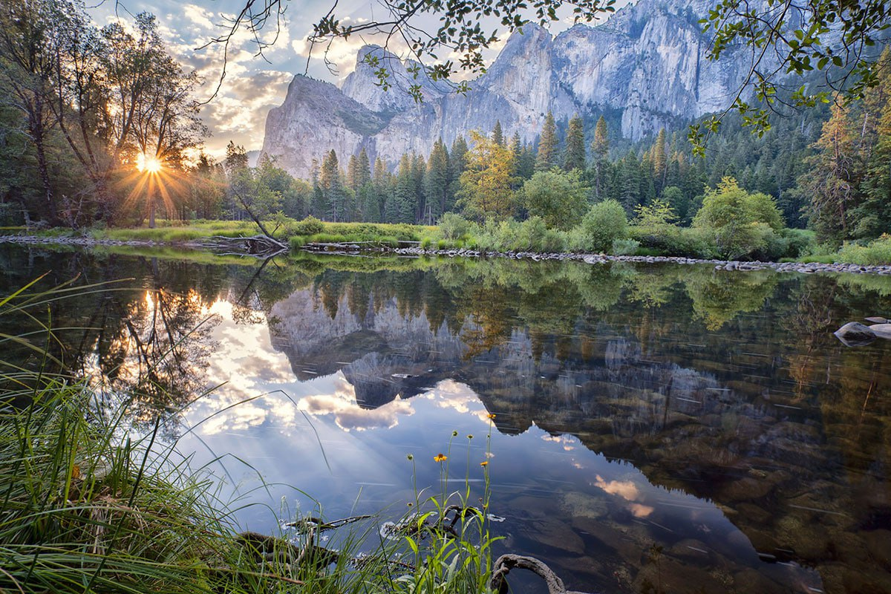
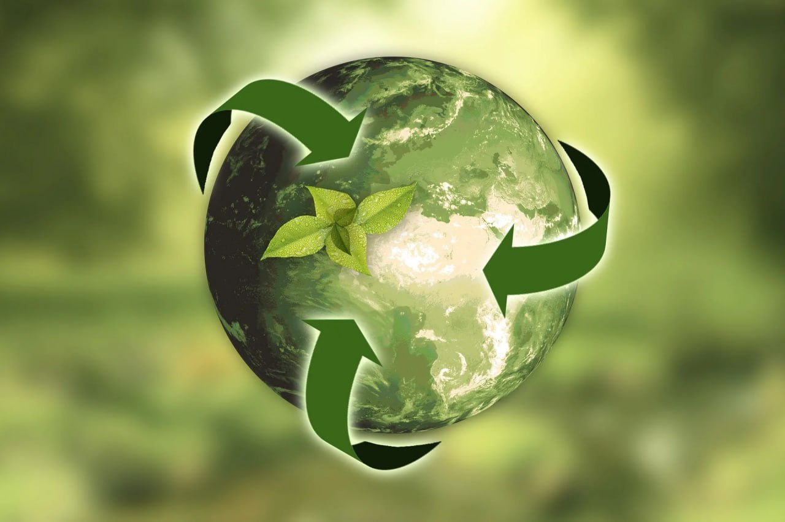

О нас
Добро пожаловать на сайт, посвященный Дню Дикой Природы! Наша миссия - привлечь внимание к проблемам окружающей среды и способствовать ее сохранению.
События
- Утренняя экологическая прогулка
- Лекции по сохранению биоразнообразия
- Фотовыставка "Красота Дикой Природы"
Новости
Партнерство с местными организациями по охране природы. Разработка новых проектов по реставрации экосистем. Получение поддержки от общественности.
Когда отмечается День дикой природы в России и мире в 2024 году
Всемирный день дикой природы 2024 приходится на 3 марта. Праздник сравнительно молодой. Отмечается с 2013 года и преследует великую цель – регулярно напоминать человечеству, насколько хрупка наша природа, ее обитатели и чем чревато их уничтожение.
История праздника
Человек пользуется ресурсами планеты, не задумываясь, какой вред наносит всему, что его окружает. Некоторые виды диких животных продают на черных рынках, массовый вылов рыбы приводит к ее вымиранию, вырубка лесов лишает животных крова и еды. Стоит ли говорить, что хищников убивают ради забавы? В таких условиях буквально через несколько десятков лет большая часть флоры и фауны будет истреблена! Чтобы не допустить исчезновения всего живого на земле, многие общественные организации ведут пропаганду против халатного отношения к данной проблеме…
Чтобы дать человеку возможность задуматься, как беззащитен наш мир и чем мы можем ему помочь, ООН был учрежден праздник – День дикой природы. Этот день приурочен к принятию в 1973 году Конвенции о незаконной торговле дикими животными, которые находятся на грани исчезновения. Ежегодно на этом зарабатывается около 17 миллиардов прибыли, а тем временем, к примеру, амурские тигры, снежный барс, белый медведь, леопарды, отдельные виды ценных рыб находятся на грани вымирания. И если не заострять внимание на этой проблеме сейчас, то популяция многих животных будет попросту истреблена.
Традиции праздника
В День дикой природы 2024 в России многие люди посещают зоопарки, наблюдая за красивыми и редкими животными, музеи природы, ботанические сады, парки, наслаждаясь разнообразием флоры и фауны. Последние годы все чаще можно встретить волонтеров, освобождающих пляжи и леса от мусора.
Ведь именно брошенный нерадивыми отдыхающими мусор наиболее губителен для животных, рек и озер, морей и океанов, а также их обитателей. Организуются международные благотворительные форумы, поднимая важные вопросы. Фотографы проводят фотовыставки, где можно увидеть работы профессионалов и любителей.
Традиционно в этот день проводятся кинофестивали, посвященные защите дикой природы, отдельных животных или растений. Не лишним будет устроить просмотр телепередач о живой природе, в которых можно узнать много интересной информации о различных уголках природы.
В литературных клубах проводят лекции и семинары, презентации книг о природе, на страницах которых авторы описывают события, связанные с защитой всего живого на земле, обращают внимание населения планеты на социальную катастрофу, которая может возникнуть при необдуманном истреблении дикой природы.